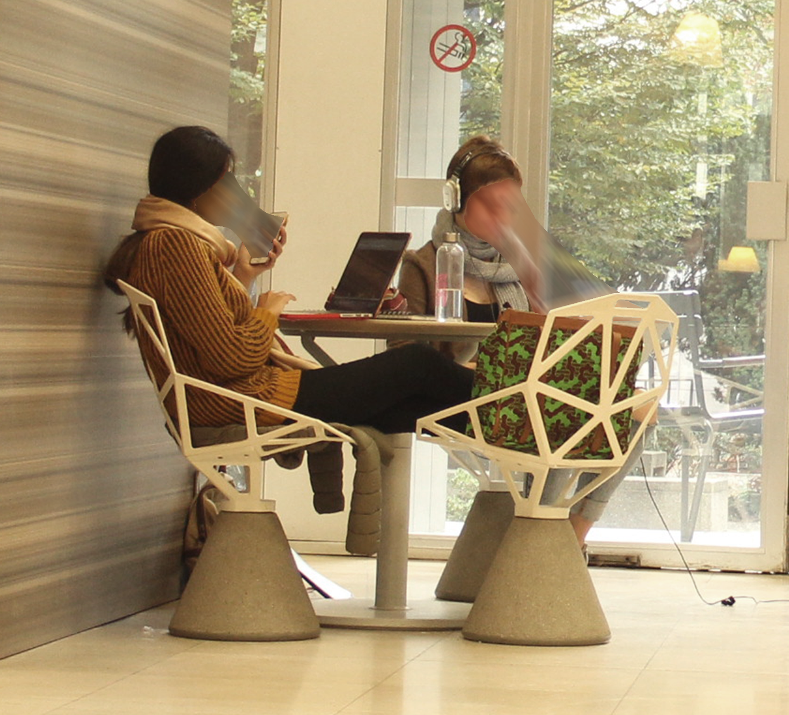
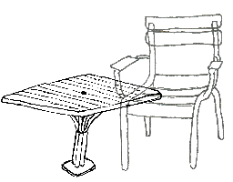
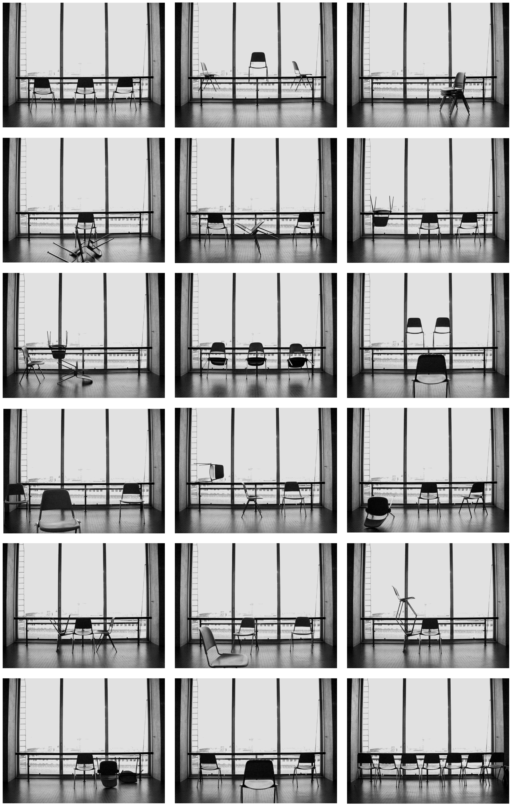

Speel het spel. Breng je werk in gevaar. Wees niet de hoofdpersoon. Zoek de confrontatie. Maar doe het onopzettelijk. Vermijd bijbedoelingen. Verzwijg niet. Wees week en sterk. Wees slim, steek je nek uit en veracht de overwinning. Kijk niet toe, bewijs niets, maar blijf met alle tegenwoordigheid van geest open voor tekens. Laat je ogen zien, laat de anderen erin kijken, zorg voor ruimte en beschouw ieder in zijn eigen perspectief. Beslis alleen met hartstocht. Misluk rustig. Neem vooral de tijd en bewandel zijpaden. Laat je afleiden. Neem om het zo te zeggen vakantie. Houdt je niet doof voor geen boom voor geen water. Trek jezelf terug in jezelf als je daar zin in hebt en gun je de zon. Vergeet de mensen in je naaste omgeving, verstevig je banden met onbekenden, buig je over bijzaken, wijk uit naar de verlatenheid, vermoord het noodlotdrama, veracht het ongeluk, analyseer het conflict. Neem je eigen kleur aan tot je in je gelijk staat en het ruisen van de bladeren zoet wordt. Loop stilzwijgend langs de dorpen. Ik volg je.
Over de dorpen - Peter Handke

Mijn andere websites
- Mastermind
heel leuk! - Memory spel
nog leuker! - Mijn favoriete albums t.e.m. 2023
eind dit jaar maak ik een nieuwtje :) - basic fit backpackers belgium
Mensen met basic fit rugzakken - Kurgustil
allereerste-versie 1.0
Geluid van eigen kweek
First tryout motherfockaa
Je rim je Ramm comme tartine et boterham
Too the deep

Mijn favoriete plekjes op het internet

Inspirerende dingen

Lievelingsfilms
- Clerks (1994)
- Rear Window (1954)
- Black Cat, White Cat (1998)
- True Romance (1993)
- Tampopo (1985)
- Perfect Days (2023)
- LoTR trilogie (2001-2003)
- Baraka (1992)
Computer tips
- LibreOffice
gratis en open source versie van Microsoft Office - FastStone Image Viewer
kei handig voor afbeeldingen in bulk te bewerken (enkel voor Windows) - FastStone Capture
kei handig voor schermopnames (enkel voor Windows)
